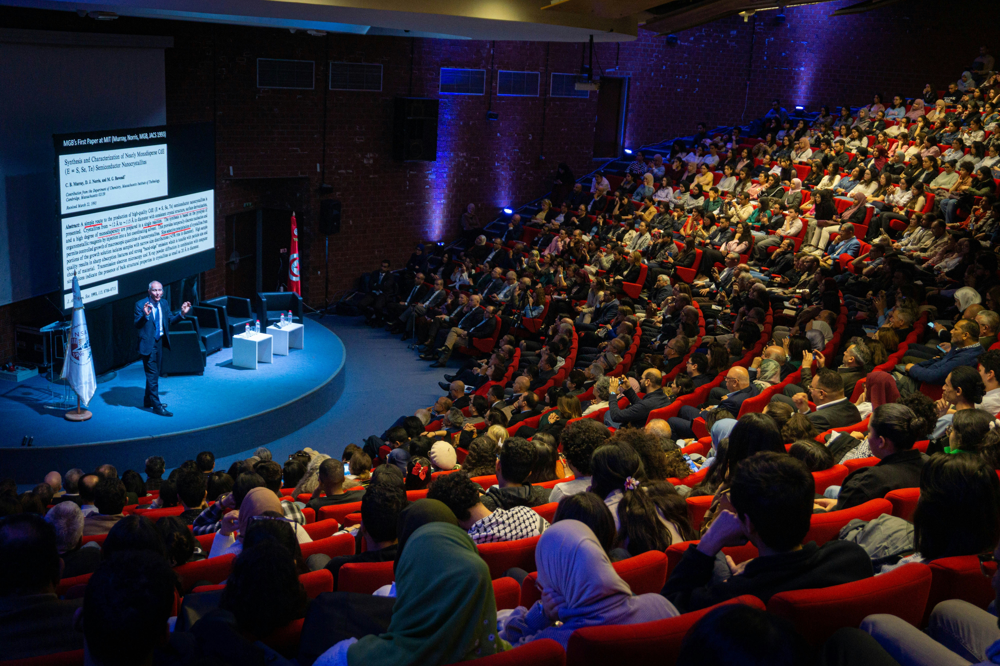
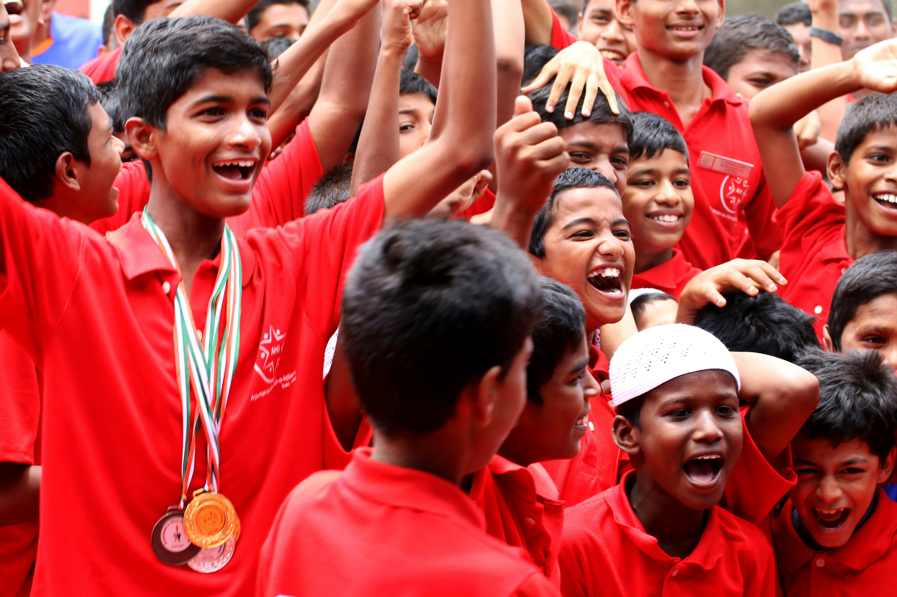

IFC promove Semana de Ciência e Tecnologia com mais de 50 atividades
Palestras, oficinas e minicursos gratuitos serão oferecidos para estudantes e comunidade externa

Semana de Ciência e Tecnologia reúne centenas de participantes anualmente. Foto: Comunicação IFC
O Instituto Federal Catarinense anunciou a programação completa da Semana Nacional de Ciência e Tecnologia, que acontecerá simultaneamente em todos os campi da instituição. Este ano, o evento contará com mais de 50 atividades distribuídas ao longo de cinco dias.
Entre as atrações confirmadas estão palestras sobre inteligência artificial aplicada à agricultura, oficinas de robótica educacional, minicursos de desenvolvimento web e apresentações de projetos de pesquisa e extensão desenvolvidos por estudantes e servidores da instituição.
As inscrições são gratuitas e abertas tanto para a comunidade acadêmica quanto para o público externo. Os organizadores esperam receber mais de 2.000 participantes nesta edição, que também contará com uma feira de inovação onde startups locais poderão apresentar seus produtos e serviços.
Projetos Estudantis
Equipe de estudantes do IFC conquista medalha de ouro em olimpíada de programação
Grupo formado por alunos do curso de Ciência da Computação supera equipes de todo o Brasil

Equipe vencedora celebra a conquista da medalha de ouro. Foto: Arquivo Pessoal
Uma equipe formada por três estudantes do curso de Ciência da Computação do IFC conquistou a medalha de ouro na Olimpíada Brasileira de Programação. A competição reuniu mais de 200 equipes de universidades e institutos federais de todo o país.
Os estudantes Gabriel Santos, Mariana Oliveira e Pedro Henrique Lima se prepararam durante seis meses para a competição, participando de treinamentos intensivos e resolvendo centenas de problemas algorítmicos. O resultado é fruto de muita dedicação e do apoio do corpo docente do curso.
O professor orientador da equipe, Dr. Fernando Costa, destacou a importância de competições como essa para o desenvolvimento profissional dos estudantes. Segundo ele, a experiência adquirida em olimpíadas de programação é altamente valorizada pelo mercado de trabalho e por programas de pós-graduação.